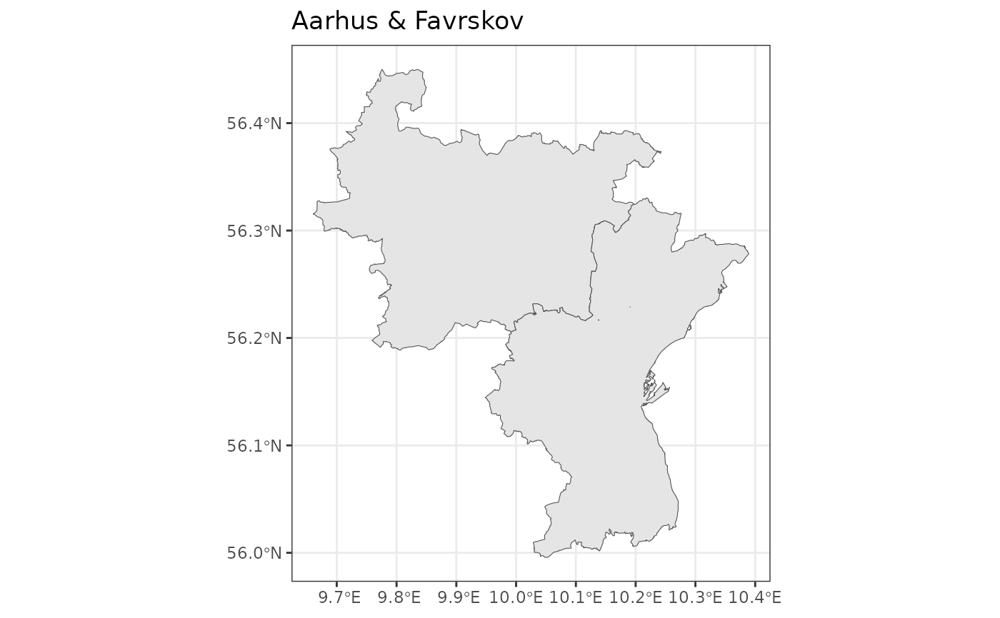

Plot a vector of municipalities in Denmark. Just provide the name.
Usage
plot_municipalities(
municipality = c("København", "Frederiksberg", "Ballerup", "Brøndby", "Dragør",
"Gentofte", "Gladsaxe", "Glostrup", "Herlev", "Albertslund", "Hvidovre",
"Høje-Taastrup", "Lyngby-Taarbæk", "Rødovre", "Ishøj", "Tårnby", "Vallensbæk",
"Furesø", "Allerød", "Fredensborg", "Helsingør", "Hillerød", "Hørsholm",
"Rudersdal", "Egedal", "Frederikssund", "Greve", "Køge", "Halsnæs", "Roskilde",
"Solrød", "Gribskov", "Odsherred", "Holbæk", "Faxe", "Kalundborg", "Ringsted",
"Slagelse", "Stevns", "Sorø", "Lejre",
"Lolland", "Næstved", "Guldborgsund",
"Vordingborg", "Bornholm", "Middelfart", "Christiansø", "Assens", "Faaborg-Midtfyn",
"Kerteminde", "Nyborg", "Odense", "Svendborg", "Nordfyns", "Langeland", "ærø",
"Haderslev", "Billund", "Sønderborg", "Tønder", "Esbjerg", "Fanø", "Varde",
"Vejen", "Aabenraa", "Fredericia", "Horsens", "Kolding", "Vejle", "Herning",
"Holstebro", "Lemvig", "Struer", "Syddjurs", "Norddjurs", "Favrskov", "Odder",
"Randers", "Silkeborg", "Samsø", "Skanderborg", "Aarhus",
"Ikast-Brande",
"Ringkøbing-Skjern", "Hedensted", "Morsø", "Skive", "Thisted", "Viborg",
"Brønderslev", "Frederikshavn", "Vesthimmerlands", "Læsø", "Rebild",
"Mariagerfjord", "Jammerbugt", "Aalborg", "Hjørring")
)Examples
plot_municipalities(municipality = c("Aarhus", "Favrskov"))
#> → Getting data on `kommuner`. This usually takes 13.13s.
#> Fetching data from the API. This will take some time.
#> Reading data to `st`.
#> Converting map data to `sf` object
